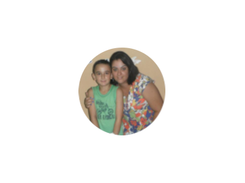
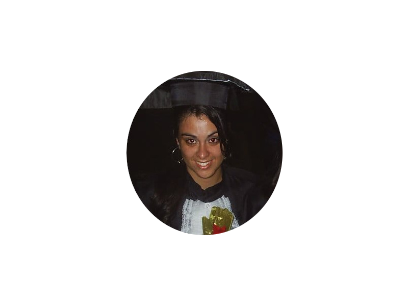
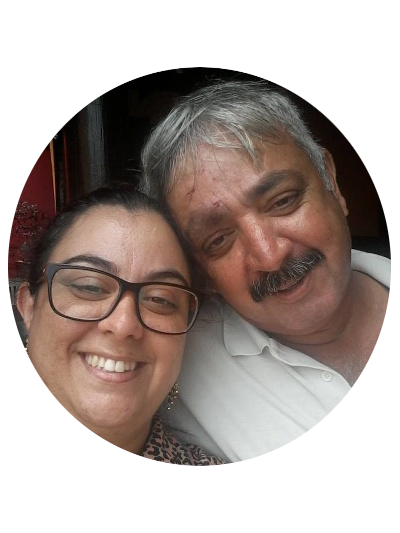

Grande Homenagem
É maninha toda vez que vou para faculade lembro de quando te perguntei o que você faria se fosse você; e maninha te digo foi a melhor pergunta que já te fiz. Como eu disse antes, você é minha inspiração para tudo que faço e repito quero te orgular muito ainda. Parabéns pelo seu dia;Em baixo tem algumas fotos que eu consegui pelo seu Facebook.
  